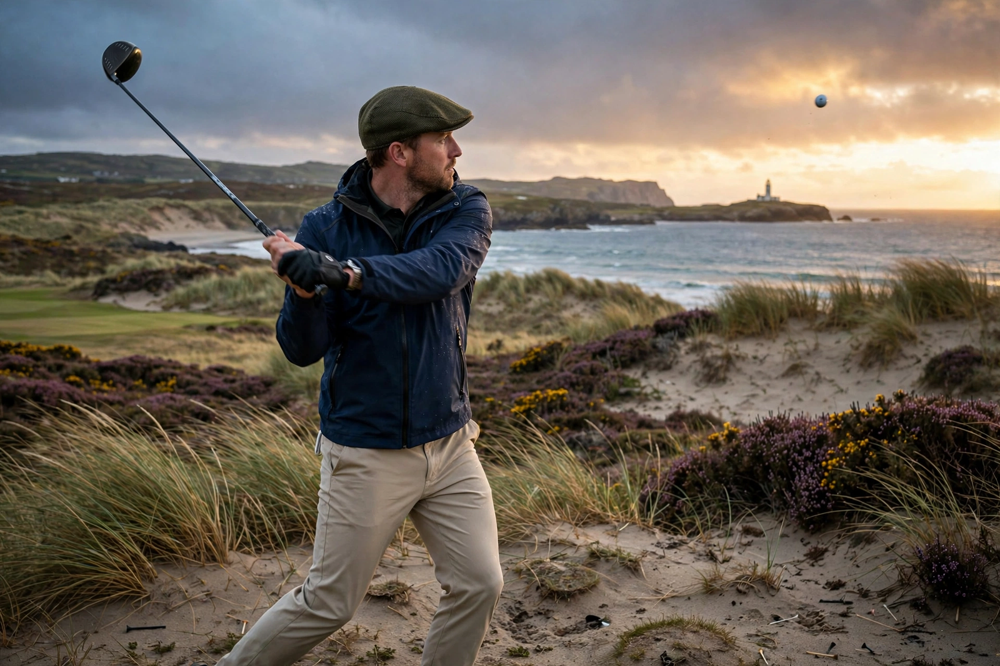

From Wikipedia, the free encyclopedia
| Golf | |
|---|---|
 A golfer completing a tee shot on a links course beside the sea | |
| Highest governing body | The R&A / USGA (Rules of Golf) |
| First played | 15th century, Scotland |
| Type | Club-and-ball sport, precision sport |
| Equipment | Golf clubs, golf ball, tees |
| Venue | Golf course (usually 18 holes) |
| Olympic | 1900, 1904; 2016–present |
Golf is a club-and-ball sport in which players use various clubs to hit a ball into a series of holes on a course in as few strokes as possible. The modern game originated in 15th-century Scotland; the 18-hole round was created at St Andrews in 1764. Golf is played for the lowest number of strokes by an individual (stroke play) or the lowest score on the most individual holes in a complete round by an individual or team (match play).
Men's professional golf has four major championships: the Masters Tournament (held each April at Augusta National, whose winner receives a green jacket), the PGA Championship, the U.S. Open and The Open Championship (the oldest, first played at Prestwick in 1860). Jack Nicklaus holds the record of 18 major victories; Tiger Woods has 15. The Ryder Cup, a biennial team match between the United States and Europe, is the sport's premier team event. The main professional circuits are the PGA Tour and the DP World Tour; the breakaway LIV Golf league launched in 2022 fractured the men's game, with merger talks ongoing.
Courses vary from coastal links land in Scotland to parkland layouts; the Old Course at St Andrews, the "home of golf", is the most famous. Players may carry up to 14 clubs; scoring terms include birdie (one under par), eagle (two under) and the rare hole-in-one.
Categories: Golf | Precision sports | Ball games